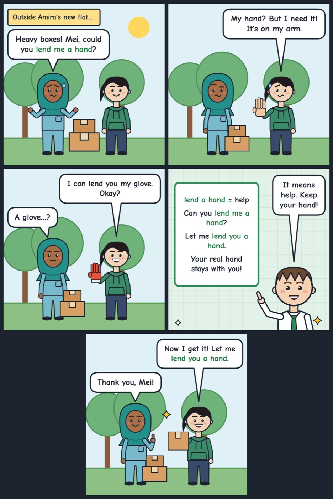

lend a hand
To help someone with a job.
Could you lend me a hand with these boxes?
'Lend a hand' means to help someone. You can say 'Can you lend me a hand?' or 'Let me lend you a hand.'
Your turn
When did someone last lend you a hand at home?
When did someone last lend you a hand at home?
See it in a comic
